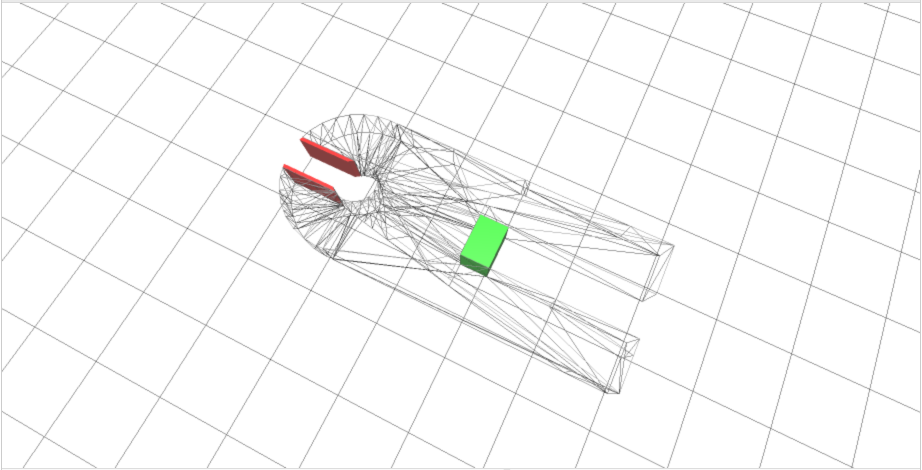
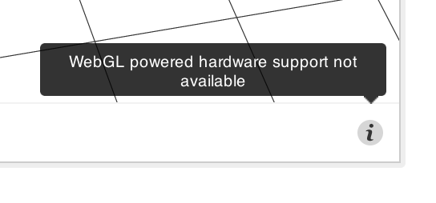

GitHub can host and render 3D files with the .stl extension.
When looking directly at an STL file on GitHub you can:
- Click and drag to spin the model.
- Right click and drag to translate the view.
- Scroll to zoom in and out.
- Click the different view modes to change the view.
Diffs
When looking at a commit or set of changes which includes an STL file, you'll be able to see a before and after diff of the file.
By default, you'll get a view where everything unchanged is in wireframe. Additions are colored in green, and removed parts are colored in red.

You can also select the Revision Slider option, which lets you use a slider at the top of the file to transition between the current and previous revisions.
Fixing slow performance
If you see this icon in the corner of the viewer, then the WebGL technology is not available on your browser:

WebGL is necessary to take advantage of your computer's hardware to its fullest. We recommend you try browsers like Chrome or Firefox, which ship with WebGL enabled.
Error: "Unable to display"
If your model is invalid, GitHub may not be able to display the file. In addition, files that are larger than 10 MB are too big for GitHub to display.
Embedding your model elsewhere
To display your 3D file elsewhere on the internet, modify this template and place it on any HTML page that supports JavaScript:
<script src="https://embed.github.com/view/3d/<username>/<repo>/<ref>/<path_to_file>"></script>
For example, if your model's URL is github.com/skalnik/secret-bear-clip/blob/master/stl/clip.stl, your embed code would be:
<script src="https://embed.github.com/view/3d/skalnik/secret-bear-clip/master/stl/clip.stl"></script>
By default, the embedded renderer is 420 pixels wide by 620 pixels high, but you can customize the output by passing height and width variables as parameters at the end of the URL, such as ?height=300&width=500.
Note: ref can be a branch (like master), or the hash to an individual commit (like 2391ae).
Where to find awesome 3D projects on GitHub
There are a bunch of excellent 3D projects on GitHub, and more being added every day!